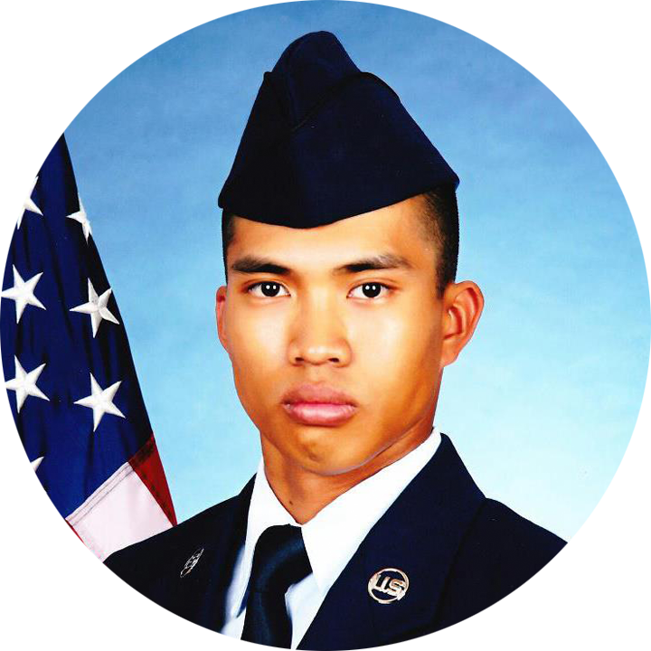

Welcome! I am
Leouel Guanzon.
I’m an aspiring Software Engineer who is eager to turn creative dreams into reality.
I am currently a student at California State University San Marcos (CSUSM); I am also in my 10th year with United States Air Force Reserves. My passion for technology and my drive as an Airman makes a great combination to attain goals that are set out for/by me.
about me
Hello! My name is Leo. I’m 27 years old and on my last year of my Bachelor’s degree in Computer Science. I have a passion in technology and turning ideas into a working applications to share to everyone.
I was born in the Philippines and moved to United States when I was 12. It was a valuable opportunity I didn’t realize until I was 18. I have always been the person that figures something out, and I have to say, it is much easier to do that here in the US.
My drive to be successful comes from a family that didn’t have much to begin with. A poor family that had to start over upon arriving to the land of the free. Luckily, a poor family doesn’t lose much starting over, but a lot to gain with the right attitude and perseverance.
experience
Military...
I am a part of the 452 Civil Engineer Squadron (CES) of March Air Reserve Base, Ca. I have served a total of nine years achieving the rank of Technical Sergeant (TSgt) with Combat Deployment experience in Kuwait. I currently hold the position of Non-Commissioned Officer In Charge (NCOIC) for the Structure Engineers department of the Unit. As an NCOIC, I oversee project development from the initial stages of planning to completion.
During my Combat Deployment, I filled a TSgt billet as a young Staff Sergeant (SSgt) that lead me to receiving the Air Force Commendation Medal. In my deployment, I managed 18 personnel that supported a $2.8 billion infrastructure, constructed eight dormitories and maintained 21 Tension Fabric Shelter Hangars. I have also purchased $2.5 million in materials for Air Force projects that accomplished all of the taskings assigned to our deployment group.
I have also held the position of a Unit Career Advisor who is charged with guiding personnels with career endeavors. As a Career Advisor, I implemented a Selective Retention Program within our unit that optimized the reenlistment and career cross-over process. I managed the Unit’s non-participating list that increased Unit rediness stats and resulted to a streamlined outprocessing procedures.
I have 11 years to go and I feel that I am just starting. There are more things to accomplish and goals to set in my military career. At the same time, I am also very proud of what I have achieved and who I have affected so far as a USAF Airman.